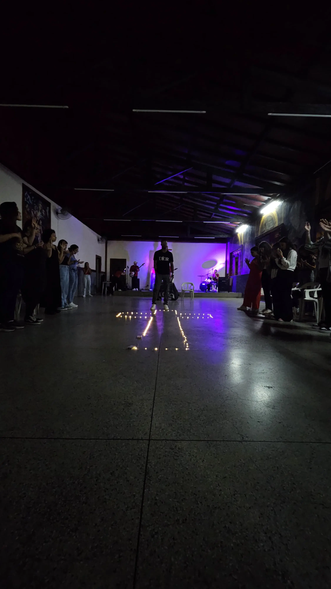
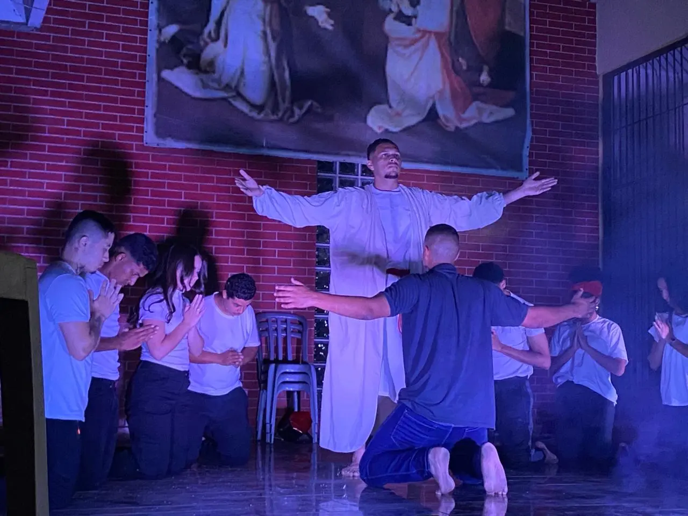
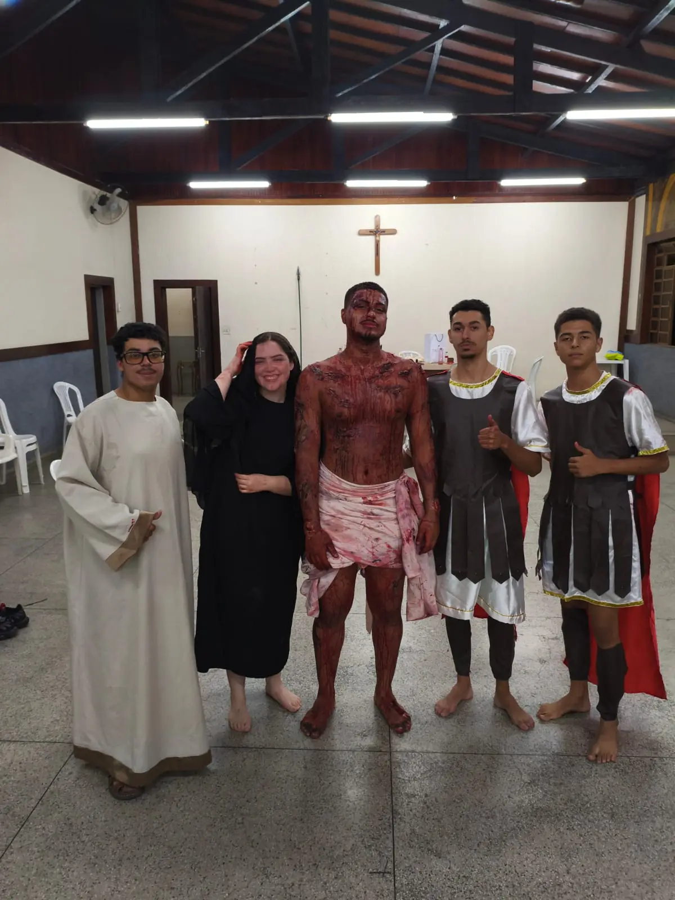
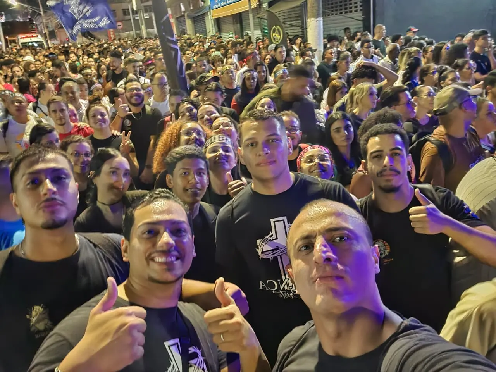
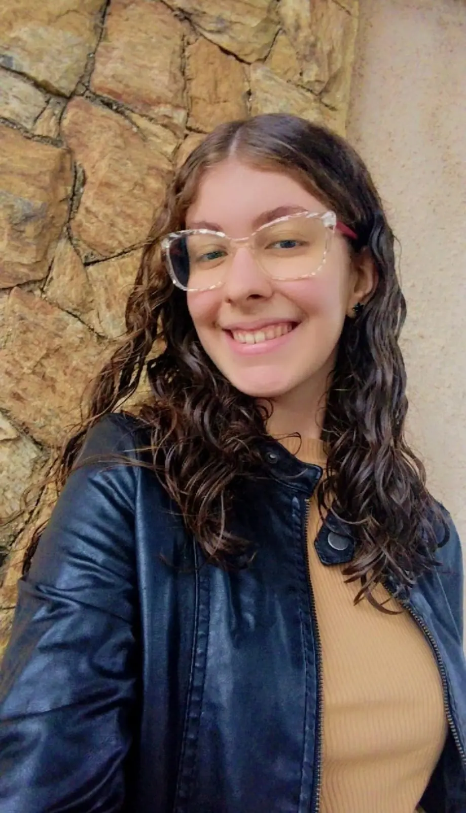

Aliança com Cristo
Unidos na fé, estudando a Palavra de Deus
e servindo com amor.
Sobre Nós

Somos o Aliança com Cristo, um grupo dedicado ao estudo da Palavra
de Deus e à realização de teatros na catedral. Nosso objetivo é
crescer espiritualmente, compartilhar o evangelho e servir a nossa
comunidade com dedicação e amor.
Através de nossos encontros bíblicos e apresentações teatrais,
buscamos inspirar e fortalecer a fé de todos.
Eventos

Retiro
Retiro para Crismandos — Participamos auxiliando com encenações e apresentações, levando mensagens de fé, reflexão e união. Através do teatro, buscamos contribuir com esse momento importante na caminhada dos jovens, tornando o retiro mais dinâmico, significativo e marcante para todos os participantes.
Visualizar
Sexta-Feira Santa
Sexta-feira Santa — Participamos das celebrações com encenações que relembram a Paixão de Cristo, ajudando a comunidade a vivenciar esse momento de reflexão, silêncio e oração. Por meio do teatro, buscamos transmitir a mensagem de amor, entrega e esperança, contribuindo para que toda a igreja vivencie de forma mais profunda esse dia tão significativo.
Visualizar
Momentos
Momentos Bons e Engraçados — Nosso grupo também é marcado por muita alegria, amizade e descontração. Entre ensaios, encontros e eventos, vivemos situações divertidas que fortalecem nossa união e criam lembranças especiais. São esses momentos simples e espontâneos que tornam nossa caminhada ainda mais leve, acolhedora e cheia de significado.
VisualizarCoordenadores
Lilian Albuquerque
Com carinho e dedicação, conduz o grupo de jovens, incentivando a fé, a amizade e o crescimento espiritual.
Leonardo Sampaio
Auxilia na organização e nas atividades do grupo, sempre disposto a servir e colaborar.

Clara Gracio
Jovem dedicada, sempre presente e comprometida com o grupo e a vivência da fé.